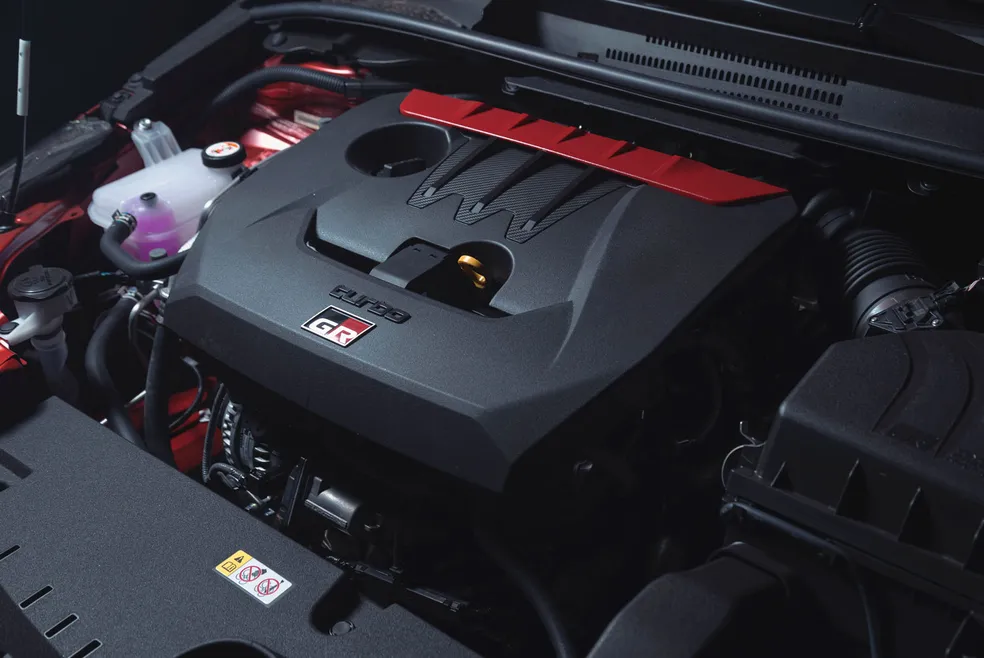

Corolla GR
Itens de série
- Rodas 17” de liga leve com acabamento na cor preta brilhante
- Acabamento Black Piano na grade inferior dianteira
- Difusores de ar com acabamento na cor prata
- Emblemas Toyota Gazoo Racing externos (para-lamas dianteiros e porta-malas)
- Espelhos retrovisores externos elétricos na cor preta e pisca integrado
- Para-choques dianteiro e traseiro com design exclusivo Toyota Gazoo Racing
- Saias esportivas laterais exclusivas Toyota Gazoo Racing
- Spoiler traseiro Toyota Gazoo Racing
- Faróis de LED com acendimento automático e ajuste de altura
- Luz de frenagem emergencial automática
- Airbags de joelho, de cortina, frontais e laterais
- Assistente de pré-colisão (Pré-Crash System – PCS) com alerta sonoro e visual e, se necessário, frenagem automática
- Controle Eletrônico de Estabilidade Veicular (VSC)
- Controle Eletrônico de Tração (TRC)
- Alerta de Mudança de Faixa (Lane Departure Alert – LDA)
- ISOFIX para fixação de cadeirinhas no banco traseiro com ancoragem de três pontos
- Sistema de áudio central multimídia com tela17 sensível ao toque, rádio AM/FM, função MP3 e entrada USB
- Acabamento interno com partes revestidas de couro, material sintético e ultra suede preto (tecido premium)
- Manopla para troca de marchas localizada no volante (paddle shift)
Fotos

Faça seu Pedido
A partir de: R$ 416.990